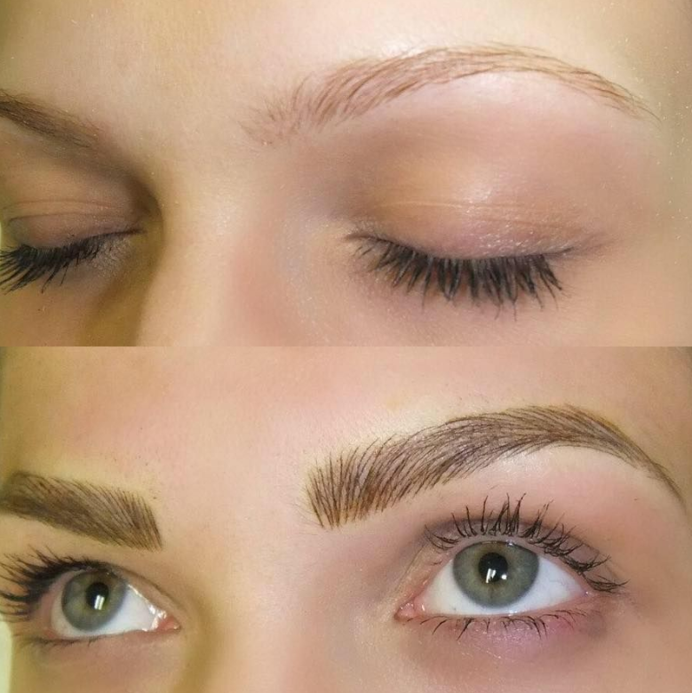
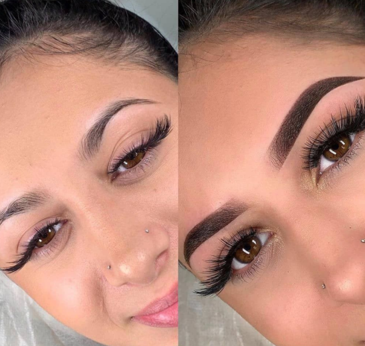
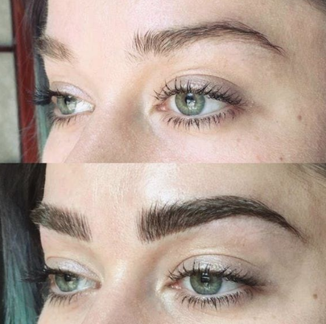
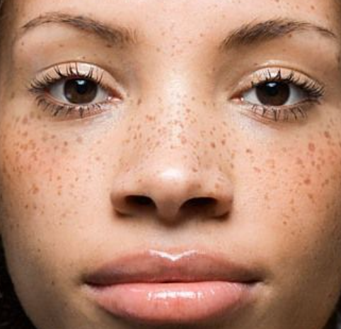
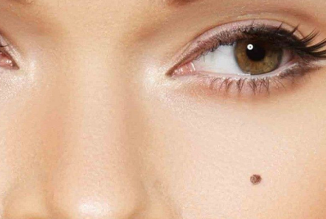
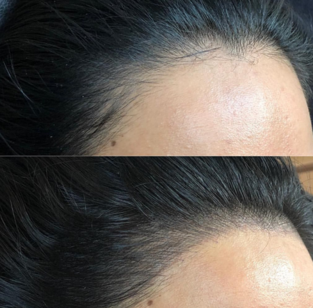
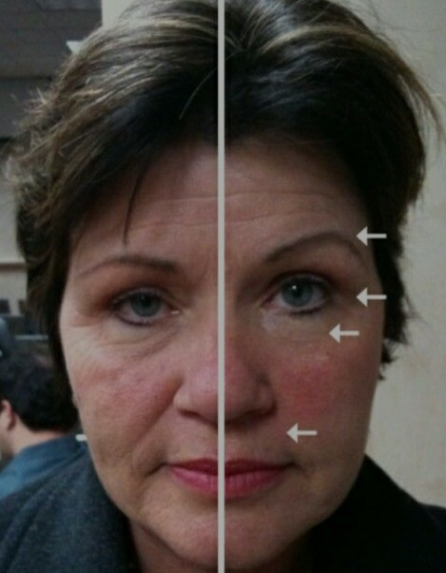

Microblading

L'ombré - microshading

Combo – Microblading et Microshading

Le tatouage de taches de rousseur

Le faux grain de beauté

La micropigmentation capillaire

Le soin galvanique régénérateur de la peau
Some quick

Ombré – Microshading (300 €)
3h00mn
Le microblading est une technique semi-permanente pour rehausser les sourcils, dans laquelle le pigment est gratté dans la peau par de petites incision ressemblant à des poils, à l'aide d'un outil à main avec une lame formée de minuscules aiguilles.

Combo – Microblading et Microshading (300 €)
2h30mn
L'ombré - microshading est une technique de maquillage des sourcils semi-permanente qui utilise une petite machine pour placer des points de pigment extrêmement fins sur la peau, créant ainsi un look crayon à sourcils aux nuances douces.

Microblading (250 €)
2h
Le Combo – Microblading et Microshading est une combinaison des deux techniques ombré et microblading et est la technique la plus populaire pour un effet d’un naturel stupéfiant.
Taches de rousseur (150 €)
1h
Le tatouage de taches de rousseur est une procédure semi-permanente pour imiter l'apparence des taches de rousseur naturelles en utilisant soit un moteur rotatif (machine) soit une seule aiguille (piquée à la main) avec un pigment de tatouage à base de fer pour percer à plusieurs reprises de petits trous dans votre visage.
Grain de Beauté (55 €)
30mn
Le faux grain de beauté est une technique rapide et efficace pour présenter un grain de beauté hyper réaliste. Un simple petit grain de beauté qui met en valeur certaines parties du visage, et revêt de nombreuses significations selon la localisation dudit grain de beauté.